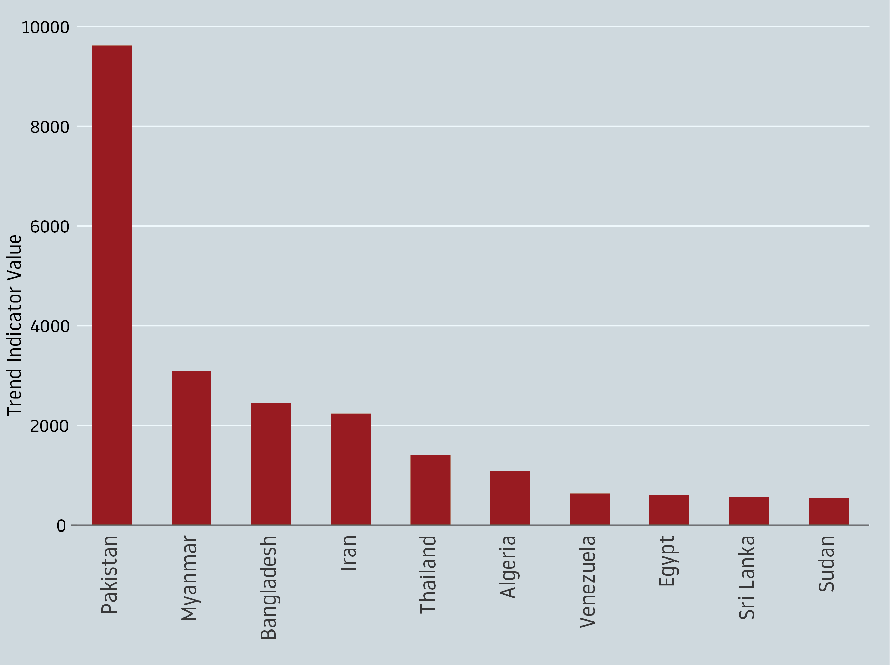
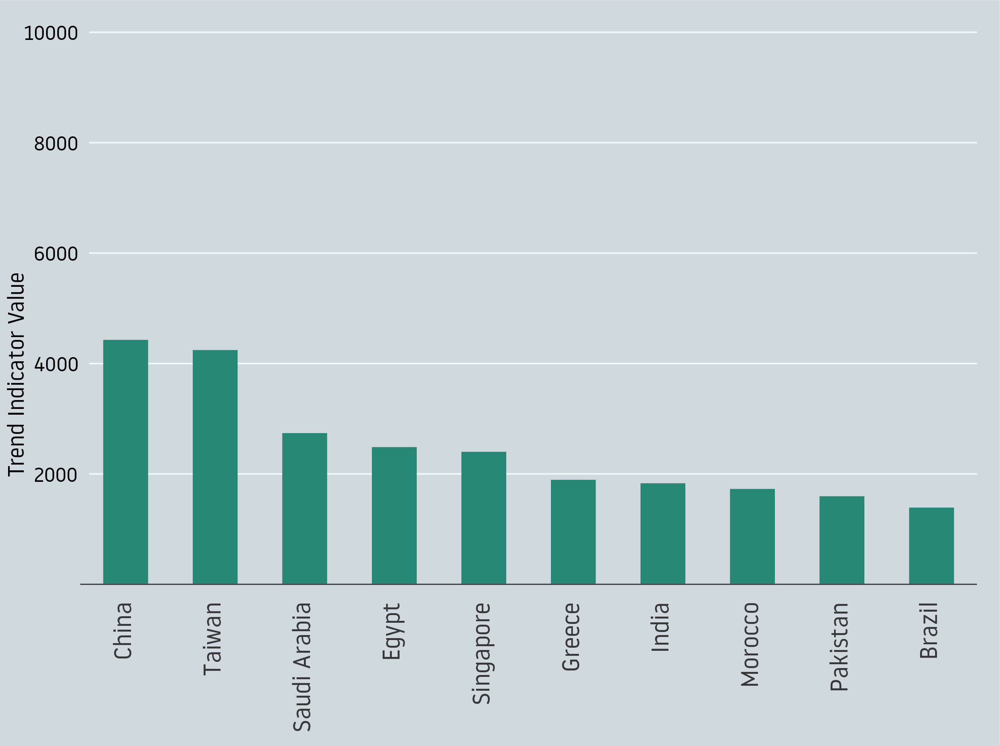
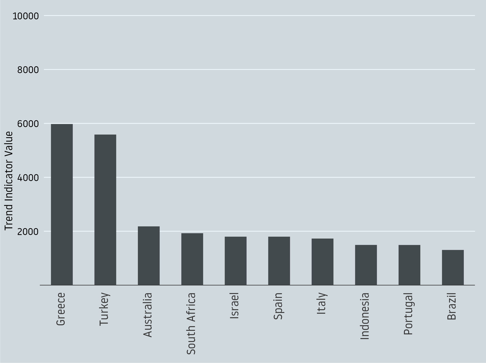
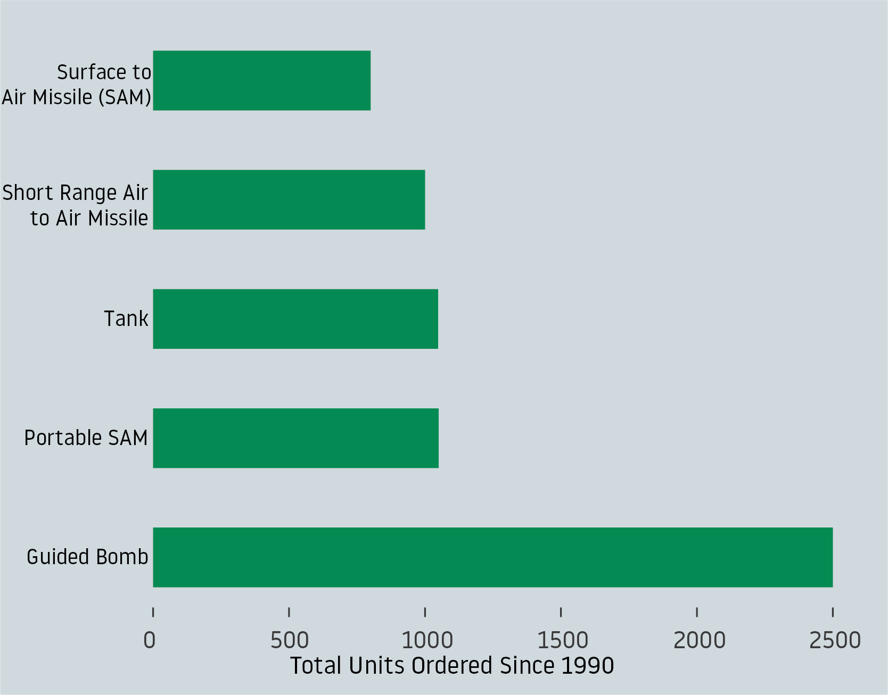
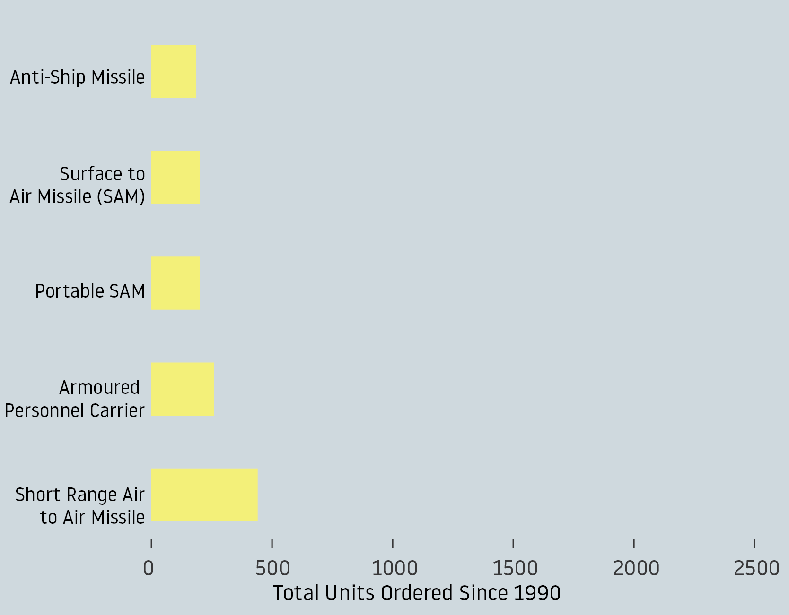
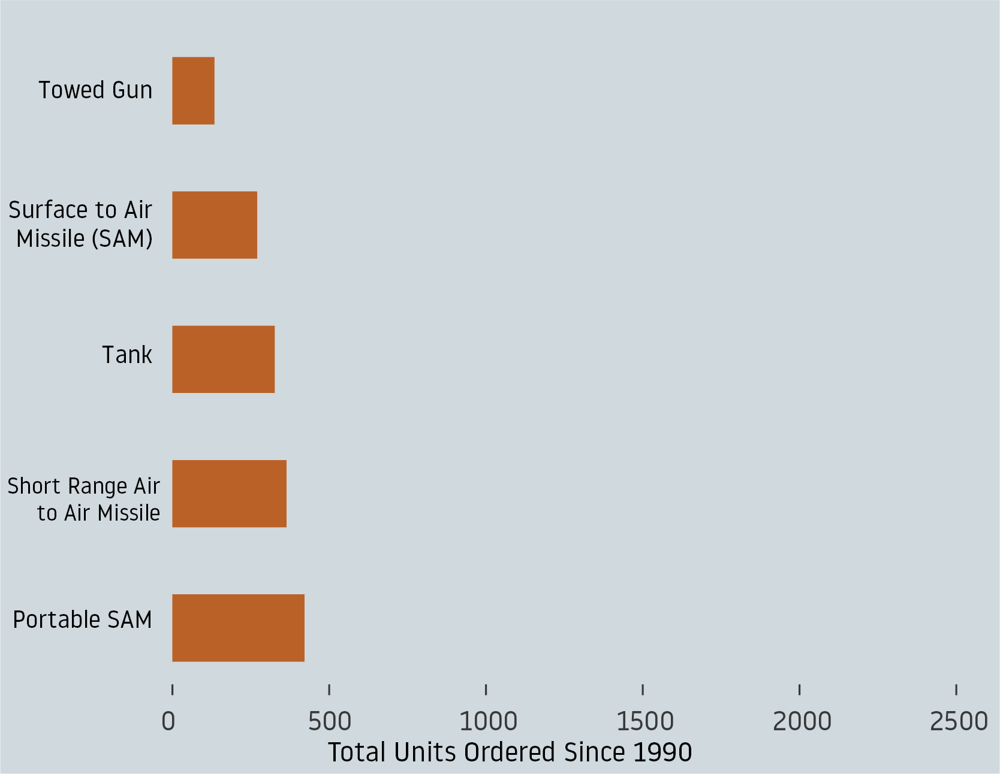

Military
BY Tekendra Parmar
Published Aug 06, 2018
Last week, the New York Times reported on China’s newest space station—a $50 million dollar investment built by the Chinese military in the middle of the Patagonian desert. The hulking 16 story building is but one example of the various investments made by the Chinese government over the last several years that has American military and political pundits on edge—a sign of a nascent empire rising in the east as a possible contender to a Western world order. Last September, Ron Matthews of the National Interest warned of China’s growing military exports as a challenge to the market share of Western nations.
But how does China's military exports really compare to that of Western countries? In 2013 China became the third largest exporter of military equipment. In order to contextualize this growth, using data from the Stockholm International Peace Research Institute, I graphed the exports of the five largest global exporters of arms since 1990.
The following graphs use a metric called the Trend Indicator Value, a unit of measurement created by the Stockholm International Peace Research Insitute, in order to provide a common unit to measure the trends and flows of weapons transfers to countries over time. Rather than measuring financial value, the TIV unit measure the transfer of military resources and accounts for several performance characteristics such as weight, speed, range, payload alongside whether the weapons were new or used and the year they were produced. Each weapon is given a value for each unit and a cumalative value is calculated according to the total number of weapons delivered
For example, if Spain were to buy six Eurofighters valued at 55 million SIPRI TIV and one Leopard-2A4 tank, valued at 4 million SIPRI TIV, the delivery of the arms is valued at a cumalative 334 million SIPRI TIV.
Top Five Global Arms Exporters
The United States and Russia have dominated global arms exports for the last two and a half decades.
NOTE: Trend Indicator Value expressed in millions.
SOURCES: SIPRI
The graph shows Trend Indicator Values for each country’s cumalative exports from 1990 to 2017. Unsurprisingly, the United States has dominated the global arms trade in the last two decades with Russia trailing closely along. In comparison, France, Germany and China currently the bottom three of the largest exporters of global arms, are barely noticeable on the graph.
In 1998, the year in which US arms exports were at peak levels in the last two decades, the US exported twice the number of global arms than the cumalative totals of Russia, France, Germany and China. In 2012, when China surpassed France and Germany to become the third largest arms exporter, the country exported less than a quarter of arms exported by the United States and less than 18 percent of the total exports of Russia that year.
Largest Arms Exporters (Excluding the United States and Russia)
In 2012 China surpassed the number of exports by France and Germany.
NOTE: Trend Indicator Value expressed in millions.
SOURCES: SIPRI
Impressively, in 2012, when China took the world's stage as a global arms exporting contender, the country's exports were three times bigger than in previous years. However, at large, arms sales by China's European rivals are not as big as in previous years. Germany exported 60 percent less in the last year than in 2007, when exports from the country were at its peak. Similarly, France's exports have fallen by 31 percent from 1997, when exports from the country were at its peak. And in the last year, Chinese arms exports fell by 50 percent from 2016, allowing France to reclaim its position as third largest exporter of global arms, whether this continues remains to be seen.
Has China stolen market share from Western competitors?
Mostly not. While Chinese arms exports in 2012 were large enough for analysts and pundits to take notice, France and Germany traditionally supply weapons to a different demographic than China. Over the last two decades, Germany supplied a majority of its weapons to more developed countries. France, ironically, supplied weapons to both China and Taiwan, and the lions-share of Chinese exports went to Pakistan.
Top Ten Exports of Chinese Arms by Country
The majority of Chinese Arms exported in the last two decades have gone to Pakistan, Myanmar, and Bangladesh.
Top Ten Exports of French Arms by Country
In the last two decades the majority of French arms exports have gone to both China and Taiwan.
Top Ten Exports of German Arms by Country
German arms exports in the last two decades skew heavily European.

SOURCES: SIPRI
China’s arms exports seem to be more targeted compared to its European competitors, and heavily skewed towards neighbors of its regional rival, India. In the 90s, China's arms transfers to Pakistan peaked in 1993—a particularly tumultous year for the country. An incoming Clinton administration had given the Pakistani government six months to convince the administration that it wasn’t a state-sponsor of terrorism, and later that year, the Indian government accused Pakistani intelligence officers of organizing the deadly 1993 Mumbai bombing. Meanwhile, China exported more than 3 times the number of weapons it had delivered the previous year, and arms exports to Pakistan have only continued to grow into the late aughts.
Top Three Importers of Chinese Arms
China's predominantly exports arms to countries neighboring its regional rival India.
In the last decade, Chinese arms exports to Myanmar peaked in 2011 and 2012, coinciding with outbursts of violence by the Myanmar military, known as the Tatmadaw, against the Rohingya. Recent attempts by the United Nations Security Counil to condemn the violence as ethnic clensing were also blocked by China. In the past five years, exports to Bangladesh have also increased, largely seen by security analysts as furthering the attempt to contain its regional rival in the subcontinent.
"If you talk about One Belt, One Road and China's military exports all being part of the same strategy to Boost China's influence, we can see something that has emerged that we call China's encirclement strategy," says Jon Grevatt, Asia Security Analyst at IHS Markit, "China has significantly boosted investment to India's neighbors through strategies such as the String of Pearls. China is investing in developing ports and infrastructure across South Asia and developing a military base in Pakistan. China is also expanding exports of tactical systems such as submaries and fighter aircrafts that give India's neighbors a significant and affordable military capability."
One of the primary goals of this strategy, according to Gravitt, is to ensure that India is preoccupied by the military capabilities of its neighbors while also boosting China's foreign influence in the region. "There are scenarios in which India could be quite concerned, if there was a regional conflict, which way would countries like Bangladesh and Sri Lanka turn? China's influence in those markets, not just in military exports, but in many other areas, has expanding significantly in the last decade."
What is China exporting?
China's Top Five military equipment exports since 2012, consisted of anti-tank missiles, surface to air missiles (alongside its portable variant), anti-ship missiles, and armoured personnel carriers. To its largest importers, the Chinese government exported a variation of these military equipment but also included short range air missiles and guided bombs, which consisted of the majority of Chinese exports to Pakistan since the 1990s.
Pakistan
Guided Bombs accounted for the majority of Chinese exports to Pakistan
Myanmar
Short Range Air Missiles accounted for the majority of Chinese exports to Myanmar.
Bangladesh
Portable Surface to Air Missiles accounted for the majority of Chinese exports to Bangladesh.

SOURCES: SIPRI
According to Gravitt, military sanctions from the West during the 1980s after Tiananmen Square, forced China to develop its native tactical capabilities. "In the 90s, China realized that a focus on convential weapons wasn't sufficient in order to advance to the next stage, China saw the next stage as the capability benchmarks of the United States." But whether, China has sufficiently reached this next stage, remains a question mark. Since 2012, anti-tank missiles have ranked as the single largest export by both China and the United States. But in terms of sheer quantity, the United States has exported nearly 11 times the number of anti-tank missiles than China in that time period. The US also exported nearly 6 times the number of surface to air missiles— China's number two export—in that same time period.
SOURCES: SIPRI
According to Gravitt, China is on track to compete with the United States in the next two decades. The country's infrastructure investments in tandem with its military exports, show a concerted effort to increase its global visibility. But, considering the sheer number of exports by the United States— which in the last year, was unmatched by the cumaltive total of the other four main global exporters—if China were to compete with the United States, it still has a high benchmark to cross.